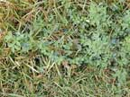
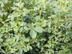
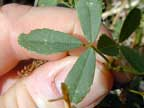
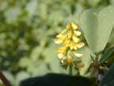

Yellow sweet clover
Melilotus officinalis and Melilotus indicus
Other names
ribbed melilot, small melilot
Description
Herb with stems up to 2m tall (M. officinalis) or 50cm (M. indicus). Leaves have three leaflets, 15 35 mm long elliptical, rich green with serrated margins covered with small nodules. The flowers are bright yellow or white, 25 60 per raceme. The fruit is a pod 3 5 mm long, hairy when young, glabrous and brown when mature, shortly beaked. The plant has a sweet "coumarin" (vanilla) odour.
Similar plants
These two species are very similar apart from their height, which depends on where they grow. M. altissima is very similar and is recognised overseas as a separate species. They are all toxic. The photos are probably M. indicus.
Distribution
Occasionally found in waste places, fields and roadsides in scattered localities in both islands, more common in South Island. Prefers alkaline soils.
Toxin
Sweet clover disease results only from fungus infected (e.g. Penicillum, Aspergillus and others) spoiled hay or silage. Coumarin glycosides present in the sweet clover is converted to dicoumarol by fungi during improper curing of the hay or when the plant is stressed. Spoiled hay or silage that contains 20 30 mg/kg of dicoumarol may cause toxicity after several months of ingestion. Dicoumarol levels of 60 mg/kg may cause signs of poisoning within 2 3 weeks. The mechanism of action is the same as for the anticoagulant rodenticides, namely competitive inhibition of vitamin K epoxide reductase and the loss of production of clotting factors II, VII, IX and X.
Species affected
Mainly cattle have been poisoned, but sheep, pigs, and horses (all animals that eat affected hay) may be poisoned. Transplacental toxicity and abortion may occur.
Clinical signs acute
Large and obvious swellings representing subcutaneous haemorrhages are the first clinical signs. Stiffness and lameness are also seen due to bleeding into muscles and joints. Pale mucous membranes, a weak pulse and a rapid heart and respiratory rate, haematomas, epistaxis, and GI bleeding can accompany these signs. Internal haemorrhage may result in the animal bleeding to death. (Signs are consistent with anticoagulant poisoning).
Clinical signs chronic
Post mortem signs
Massive amounts of internal haemorrhage occur, blood will be seen subcutaneously and in connective tissues. Findings include haematomas in areas of normal activity, haemorrhages of the peritoneal surfaces of the rumen, retroperitoneal haemorrhage, and haemorrhages in lungs, kidneys, and throughout the animal. The carcass will be pale. This is usually a herd problem, and animals need to ingest the toxin for at least two weeks before signs manifest.
Diagnosis
History of exposure, as well as clinical signs and lesions will aid diagnosis. There will be a prolonged clotting time and a reduced prothrombin count. Haemolytic anaemia results from a toxic ingestion. Submit samples of suspected feed for analysis of dicoumarol content.
Differential diagnosis
These include blackleg, pasteurellosis, bracken fern poisoning and aplastic anaemia. These diseases are not herd problems however. The only other commonly acquired diseases are purpura haemorrhagica – usually in horses and anticoagulant poisoning. Congenital diseases affecting blood platelets and coagulation factors may also cause large haemorrhages.
Treatment
Initially IV administration of 2 4 litres of whole blood per 450kg. Repeat if necessary. Parenteral administration of synthetic Vitamin K1 should increase prothrombin production. A single dose (1.1 1.3 mg/kg body weight given IM) will restore the prothrombin time. Vitamin K1 is more effective than K3 (menadione) and is more expensive. Menadione or K3 is effective in swine coagulopathies. In the horse K3 causes renal toxicity and is contraindicated. Stop feeding suspected hay/silage.
Prognosis
If small amounts have been ingested, blood transfusion and treatment with Vitamin K1 should be effective.
Prevention
References
Conner H.E. The Poisonous Plants In New Zealand. 1992. GP Publications Ltd, Wellington
Cooper M R, Johnson A W. Poisonous Plants and Fungi in Britan: Animals and Human Poisoning. Her Majesty’s Stationary Office. London. 1998
Parton K, Bruere A.N. and Chambers J.P. Veterinary Clinical Toxicology, 2nd ed. 2001. Veterinary Continuing Education Publication No. 208
 plant |
 |
|
|
 |
 |
|
|
|
||
|
|
|
|